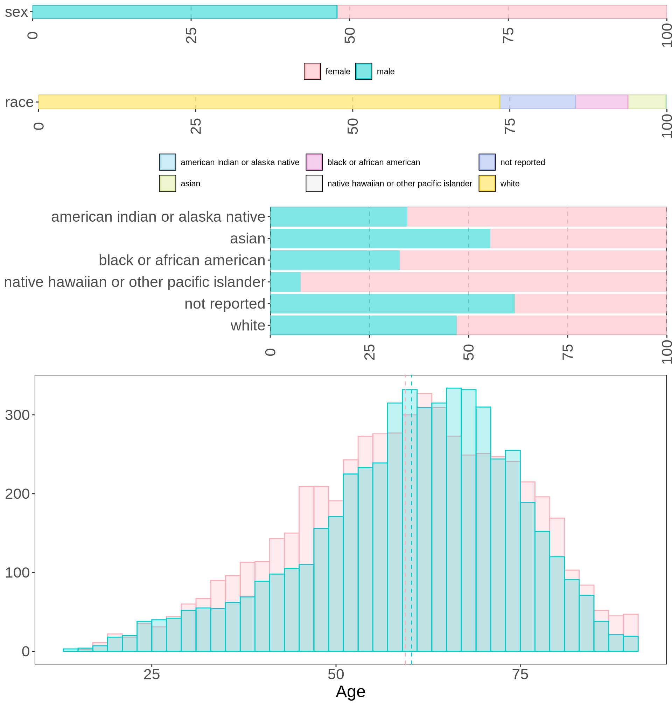
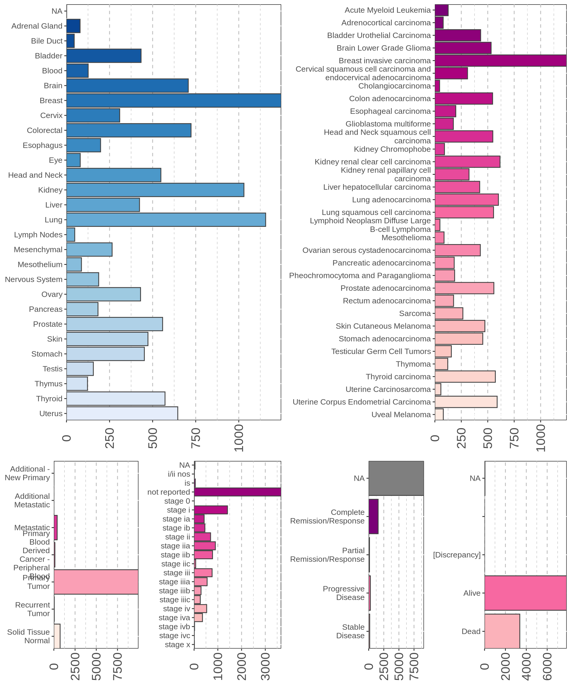

Gather Datasets and QC
Gather resources
We can gather cancer multi-omics datasets from large public data resources such as TCGA (The Cancer Genome Atlas) and the GDC (Genomic Data Commons), as well as smaller-scale datasets generated by individual labs from the USDC Xena platform. From the Xena platform, we can find the data from Pan-Cancer Atlas consortium, which provides textbook high quality datasets that can be explored for target discovery in cancer.
TCGA PanCan collects 12,839 samples from 28 organs, 69 primary sites spanning 32 different cancer types.
The metadata available for the samples and the subjects include:
- biopsys type (metastatic, primary tumor, solid tissue normal) –> data
- cancer subtype based on canonical molecular classification (methylation, miRNA, mRNA, proteins, etc.) –> data
- cancer subtype based on the immune models –> data
- overall survival information –> data
For these samples, there are available rich clinical metadata and matched multiomics datasets.
We can retrieved the following multiomics readouts:
- copy number variants at the gene level –> data
- DNA methylation data –> data
- gene expression (RNAseq) –> data
- micro RNAs (miRNA) –> data
- protein expression –> data
- somatic mutations –> data
All the multiomics readouts are at the gene level, except for the DNA methylation data, that will have to be mapped and normalized at the gene level. Luckily, a mapping file is available as well.
Xena provides as well already precomputed enrichments and cell types deconvolutions:
- gene programs that are canonical drug targets –> data
- homologous recombination deficiency (HRD) –> data
- immune signaling –> data
- ssGSEA PARADIGM annotations –> data
- stemness score based on DNA methylation signals –> data
- stemnsess score based on the RNAseq expression of 103 key genes –> data
I assure you that integrating all these data will be fun, and it will provide deep insights on each cancer we decided to analyse.
Samples Overview
Next step is to integrate together all the available sample and subjects metadata. This allows to break down the samples by cancer type and demographic distributions. While Xena provides some information, it lacks a cleaned table containing all the demographic information of the subjects. Conveniently, GitHub user ipezoa already retrieved from GDC and CGC and combined together all the metadata obtained from JSON and XML files. A thorough explanation of each metadata field is reported here.
Let’s integrate all the metadata together. We have indeed access to a rich and comprehensive ensemble of clinical and sample metadata for the samples at hand.
Cohort demographics
Let’s check the overall demographic distributions of all the samples.

We notice that the ration between males and females included in the PanCan dataset is almost 1:1. As well, the age distributions for both sexes are very similar, and the averages of the two distributions almost overlap around 60 years old (59.4 years for female and 60.3 years for males). Race-wise, we have an over-representation of whites (73,4% of samples), followed by 12.0% of samples for which no race information is available. Blacks or african americans and asian represent a small percentage of the samples available, with 8.3% and 6.0% of the samples respectively.
Clinical overview
Let’s check now the different cancer included in the study.

We can check for any biases in terms of sex and ethnicity in the collected cancer samples. I would not expect any surprise here. Let’s see.

Lastly, we can test how much … discrimination power gene expression filter lowly expressed genes selecte the top 1000 most variable genes By selecting the top 1,000 most variable genes we can see that there are clear differences between each cancer type, as captured by the UMAP.

The UMAP show us that we can clearly clusters cancer types in distinct groups, and that we can identify clusters with related cancers (i.e.: colon-adenocarcinoma COAD and rectum-adenocarcinoma READ).